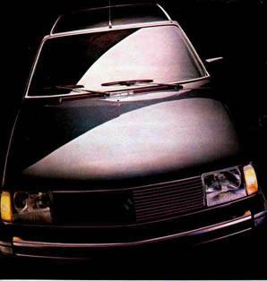

Extendí mi mano derecha hacia el asiento en el que
debe viajar el acompañante. Otra vez, Él estaba conmigo.
Puse la diestra con la palma hacia abajo y sentí, de inmediato, que “algo”
me apretaba suavemente y ese apretón produjo una sensación
de calor intenso en mi mano, señal imposible de que ocurriera, pues estaba
viajando sola.
“Él” estaba a mi lado, protegiéndome.
Y ahí empecé a sentirme como en estado de nirvana.
Era libre, liberada de todo lo mundano y apreciaba Su presencia, que me alentaba.
Se produjo en mí una conmoción extraña , imposible de explicación
alguna .
Yo sabía que Dios estaba a mi lado, dándome
fuerzas y seguridad.
Volví a llevar mi mano hacia la etérea figura y…nuevamente,
el roce de algo que la acariciaba suavemente a la
mano que ardía en calor.
Seguí el rumbo a mediana velocidad, como siempre,
hacia la ciudad de Villa Carlos Paz, en donde vivo, y entonces…hablé
con Él:
“Gracias por acompañarme y protegerme, gracias por estar conmigo,
gracias por cuidarme”.
Porque dentro de mí, existía la seguridad de que nada malo podría
pasarme mientras estuviera custodiada por mi amigo, Dios.
Esto que relato lo he vivido varias veces y siempre ocurre,
cuando estoy conduciendo mi coche nada menos que acompañada por Dios!
Y he ido comprobando que en muchas ocasiones en que existía
peligro, Él ha sido el que me daba la posibilidad de seguir en esta vida.
Pareciera que me llena el alma de una mística que
no puedo relatar, y no sé si esto es algo común en el ser humano.
Dios me acompaña, se “sienta” a mi lado, suaviza mis tristezas
y me ofrece Su benevolencia.
Sueño, sueño raro el saber que no estoy sola.
Él se presenta en momentos de extraordinaria necesidad, y toma mi mano…
!Y puedo percibir su NO físico, pero sí su enorme auspicio moral.
Acelero un poco más, continuando
mi viaje.
Pasan como en película los paisajes, la ruta iluminada y yo, que
conduzco mi R 18, estoy feliz por que tengo como pasajero a Dios.
Siento la sensación extraña de no temer a la muerte.
Me dice, sin palabras, que lo que vendrá será sensación
tan distinta a todo lo vivido hasta ahora.
Después de saber que Dios no está ausente,
los precipicios, los accidentes mortales, los disgustos, no significan
tanto como para que
incidan sobre el comportamiento humano.
Sensación de estar más allá
de lo corriente, volando sobre todo lo previsible.
Dios me acompaña, estoy entera, completa.

Detengo la marcha y miro hacia el asiento del acompañante,
tímidamente: el asiento de Dios, y vienen a mi memoria preguntas, y dudas…llevo
nuevamente mi mano hacia la derecha, palma abajo y sí! Vuelvo a sentir
ese calor divino que se va convirtiendo en fuego.
Sostengo mi mano derecha sobre mi pecho y me produce la
certeza de que el Ser que ha velado por mí, está aún conmigo.
“El” estuvo a mi lado, viajó conmigo,
pero si perdiera la vida en el trayecto, segura estoy de que cuidaría
mi paso a la eternidad que será,
seguramente, dulce, suave, tranquilo y feliz.
Dios viaja conmigo , a mi lado, no necesito pensar en nada...
Es un estado natural por el cual los humanos dejamos este
mundo. Yo no voy a ir sola: Dios está conmigo. Y me acompaña.-
NELLY ANTOKOLETZ
nació en Capital Federal siendo su domicilio actual en Villa Carlos
Paz.- Provincia de Córdoba.- Argentina.-
Ejerció el periodismo desde 1963 y fue invitada dentro del marco
de su profesión, por el gobierno de Francia.
Fue fundadora y directora del Periódico “EL GRILLO”,
en Unquillo.-
Fue Directora de Cultura y también Directora de Turismo en la ciudad
de Unquillo (Córdoba)
Es miembro Correspondiente con Diploma de Honor de la “Sociedad
Vicente López y Planes” de Buenos Aires por defender la libertad
de prensa.-
En la actualidad es Coordinadora del Ciclo cultural LA MAGIA DE LA PALABRA,
dependiente de la Dir. de Cultura Municipal de V. Carlos Paz.-
PREMIOS: primer premio en poesía en el Certámen
“Gabriela Mistral” de Quillota.- Chile.- por: “Fuego
Interno”.- 2003.-
Tres libros publicados: “POEMAS SIN NOMBRE”.-1997.-
“LAS MANOS DE ANDRÉS”.- 1999.-
“PRELUDIO PARA UNA MUERTE”.- 2007.-
En edición en Chile: “AVES EN LLAMAS”
Radio: Turismo Río Ceballos.- “Concientización
Turística”
De Punta- V. Carlos Paz: “Turismo del Siglo XX